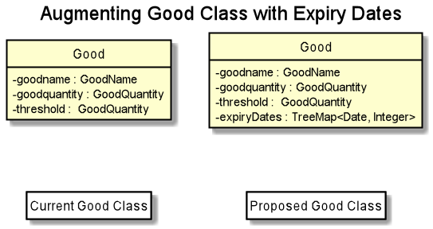

By: AY1920S2-CS2103-W14-2 Since: Feb 2020 Licence: MIT
- 1. Setting up
- 2. Design
- 3. Implementation
- 4. Documentation
- 5. Testing
- 6. Dev Ops
- Appendix A: Product Scope
- Appendix B: User Stories
- Appendix C: Use Cases
- Use case: UC2 - listing all goods
- Use case: UC3 - adding a supplier
- Use case: UC4 - deleting a supplier
- Use case: UC5 - deleting a good from supplier’s list
- Use case: UC6 - editing a supplier
- Use case: UC7 - finding a supplier for a particular goods
- Use case: UC8 - buying a particular goods
- Use case: UC9 - selling a particular goods
- Use case: UC10 - set lower threshold quantity of goods
- Use case: UC11 - listing all past transactions
- Use case: UC12 - search transactions with specific criteria
- Use case: UC13 - undoing a command
- Use case: UC14 - redoing a command
- Appendix D: Non Functional Requirements
- Appendix E: Glossary
- Appendix F: Product Survey
- Appendix G: Instructions for Manual Testing
1. Setting up
Refer to the guide here.
2. Design
2.1. Architecture

The Architecture Diagram given above explains the high-level design of the App. Given below is a quick overview of each component.
The .puml files used to create diagrams in this document can be found in the diagrams folder.
|
-
At app launch: Initializes the components in the correct sequence, and connects them up with each other.
-
At shut down: Shuts down the components and invokes cleanup method where necessary.
Commons represents a collection of classes used by multiple other components.
The following class plays an important role at the architecture level:
-
LogsCenter: Used by many classes to write log messages to the App’s log file.
The rest of the App consists of four components.
Each of the four components
-
Defines its API in an
interfacewith the same name as the Component. -
Exposes its functionality using a
{Component Name}Managerclass.
For example, the Logic component (see the class diagram given below) defines it’s API in the Logic.java interface and exposes its functionality using the LogicManager.java class.
How the architecture components interact with each other
The Sequence Diagram below shows how the components interact with each other for the scenario where the user issues the command delete-s 1.
delete-s 1 commandThe sections below give more details of each component.
2.2. UI component
API : Ui.java
The UI consists of a MainWindow that is made up of parts e.g.CommandBox, ResultDisplay, SupplierListPanel, StatusBarFooter etc. All these, including the MainWindow, inherit from the abstract UiPart class.
The UI component uses JavaFx UI framework. The layout of these UI parts are defined in matching .fxml files that are in the src/main/resources/view folder. For example, the layout of the MainWindow is specified in MainWindow.fxml
The UI component,
-
Executes user commands using the
Logiccomponent. -
Listens for changes to
Modeldata so that the UI can be updated with the modified data.
2.3. Logic component
API :
Logic.java
-
Logicuses theInventoryManagerParserclass to parse the user command. -
This results in a
Commandobject which is executed by theLogicManager. -
The command execution can affect the
Model(e.g. adding a supplier). -
The result of the command execution is encapsulated as a
CommandResultobject which is passed back to theUi. -
In addition, the
CommandResultobject can also instruct theUito perform certain actions, such as displaying help to the user.
Given below is the Sequence Diagram for interactions within the Logic component for the execute("buy g/Apple q/50") API call.

buy g/Apple q/50 Command
The lifeline for BuyCommandParser should end at the destroy marker (X) but due to a limitation of PlantUML, the lifeline reaches the end of diagram.
|
2.4. Model component
API : Model.java
The Model,
-
stores a
UserPrefobject that represents the user’s preferences. -
stores three sets of versioned data:
VersionedAddressBook,VersionedInventoryandVersionedTransactionHistory, which inherit features from their non-versioned counterparts -
exposes three unmodifiable lists:
ObservableList<Supplier>,ObservableList<Good>andObservableList<Transaction>to be observed and displayed by the UI. -
does not depend on any of the other three components.
The AddressBook stores a list of Supplier objects, which each:
-
stores details of a supplier:
Name,Phone,Address,EmailandOffer. -
can have variable number of
Offerobjects, representing an offer to sell a specific good at a specific price. -
links to a
GoodNameand aPricevia each of itsOfferobjects

The Inventory stores a list of Good objects, which each stores details of a good:
-
its name
GoodName, -
two quantities represented by two
GoodQuantityobjects, one indicating the current quantity and the other the minimum threshold quantity
The TransactionHistory stores a list of Transaction objects. Each Transaction stores common details of a transaction:
-
TransactionIdfor unique identification, -
GoodNamefor the transaction good, and -
GoodQuantityfor the transaction quantity.
A Transaction can be either SellTransaction or BuyTransaction:
-
SellTransactionhas aPriceto indicate the price at which the goods is sold. -
BuyTransactionhas aSupplierand aPriceto indicate the supplier and the price the goods is bought at respectively.

2.5. Storage component
API : Storage.java
The Storage component,
-
can save
UserPrefobjects in json format and read it back. -
can save 3 sets of data:
AddressBook,InventoryandTransactionHistoryin json format, save them in separate json file and read the data back.
2.6. Common classes
Classes used by multiple components are in the seedu.address.commons package.
3. Implementation
This section describes some noteworthy details on how certain features are implemented and pitfalls to avoid when making modifications.
3.1. Buy and Sell Commands
The buy and sell commands are the main ways a user is expected to
interact with the Inventory Manager, and encompasses the bulk of the commands a
user is going to enter into Inventory Manager.
3.1.1. Commonalities in Implementation of buy and sell
Both buy and sell commands are required to accomplish 3 things:
-
Update the quantity in the inventory, subject to their respective validity checks.
-
Create a transaction record of itself to be added to the transaction history.
-
Commit the mutated model to facilitate proper functioning of
undoandredocommands
The API that Model exposes has been structured to mirror the requirements
of the commands. The above 3 requirements can be satisfied by calls to:
-
Model#setGood() -
Model#addTransaction() -
Model#commit().
3.1.2. Specifics of buy Command
The two ways buy executes successfully depends on whether the good
already exists in the inventory or not.
-
If the good does not already exist, then a new Good entry has to be created with the quantity bought.
-
If it does exist, then the existing good entry has to be retrieved, and the quantity updated.
Developers modifying existing Good related information must be aware that
Goods are immutable. In updating only the quantity field, all other fields
must be correctly duplicated to the updated Good entry created. Common mistakes
are to omit those fields, resulting in loss of persistent Good related
information. To make explicit this requirement to future Developers, multiple
constructors have been created with their respective purposes documented:
Good(), Good.newGoodEntry(), Good.goodWithName().
|
Buy Command Input Constraints
The following constraints have been put on buy command inputs. Their reasons
are discussed in the following section. Users will not be allowed to:
-
Purchase from a supplier that is not in the supplier list
-
Purchase a good that the supplier does not offer.
-
Purchase a quantity of good that would cause the total quantity of any individual good in the inventory to exceed the
Goodlimit.
The maximum Good limit is 999,999.
|
Developers seeking to modify the buy command must respect
the above 3 input validations as they form the basis of future features.
The buy command format is: buy SUPPLIER_DISPLAYED_INDEX g/GOODNAME q/QUANTITY
|
The current implementation of buy performs validation of the above
respectively as follows:
-
The
SUPPLIER_DISPLAYED_INDEXmust be within the length of list of suppliers returned byModel#getFilteredSupplierList(). -
Get the offers of the supplier through
Supplier#getOffers(). Iterate through theSet<Offer>of the selected supplier to find existence of anOfferwithGOODNAME. -
Reuse the inbuilt quantity validation in the
Goodconstructor to test if the resulting inventory quantity is valid. AGoodwith the new quantity is constructed. If the quantity is invalid, an error is thrown and the relevant feedback to the user returned.
3.1.3. Design Considerations
Aspect: Format of buy command
-
Alternative 1 (current choice):
buy SUPPLIER_DISPLAYED_INDEX g/GOODNAME q/QUANTITY.-
Pros:
-
Users would not have to type out the entire Supplier’s name in full and case sensitive. This increases command input speed and further optimizes usage for fast typists. Wasted time from typos in minimized.
-
Verification that a supplier exists in the supplier list is trivial. The supplier at the given index only needs to be retrieved.
-
-
Cons:
-
We lose the flexibility of having input parameters being unordered. All inputs with a prefix flag, e.g.
g/, can be input in any order, but now theSUPPLIER_DISPLAYED_INDEXhas to be the first parameter. -
Additional cognitive burden on users to remember the
buycommand format’s first parameter.
-
-
-
Alternative 2:
buy n/SUPPLIER_NAME g/GOODNAME q/QUANTITY.-
Pros: Flexibility of having unordered input is maintained.
-
Cons: Testing revealed that command entry was tedious and error prone, especially since supplier names tended to be long and a mix of upper- and lower- case alphabets, reducing user-friendliness.
-
Aspect: buy Input Constraints:
-
Alternative 1 (current choice): Supplier has to exist in supplier list before purchase.
-
Pros:
-
Supports future data analytics commands. We can save all relevant transaction information with every particular supplier at the point of transaction because the supplier will have to exist in the supplier list. The feasible future features include: cost analysis and ranking of suppliers by certain parameters.
-
Users do not have to enter an additional parameter: purchase price, since this can be extracted from the Supplier’s offer under the hood.
-
-
Cons: If user has making a new purchase, he or she has to first perform data entry for the supplier and all it’s relevant information before the
buycommand can be executed.
-
-
Alternative 2: Supplier would be an optional parameter to the buy command.
-
Pros: Command usage is more fluid and user-friendly.
-
Cons: Cost and supplier related data would be incomplete, reducing comprehensiveness of data analytics commands.
-
3.1.4. Specifics of sell Command
Sell Command Input Constraints
The following constraints have been put on sell command inputs. Their reasons
are discussed in the following section. Users will not be allowed to:
-
Sell a good they do not currently have in inventory.
-
Sell a quantity a larger quantity of a good than they currently have in inventory.
The minimum Good limit is 0.
|
Developers seeking to modify the sell command must respect
the above 2 input validations as they form the basis of future features.
The sell command format is: sell GOOD_DISPLAYED_INDEX p/PRICE q/QUANTITY
|
The current implementation of sell performs validation as follows:
-
The
GOOD_DISPLAYED_INDEXmust be within the length of list of Goods returned byModel#getFilteredGoodList(). -
Reuse the inbuilt quantity validation in the
Goodconstructor to test if the resulting inventory quantity is valid. AGoodwith the new quantity is constructed. If the quantity is invalid, an error is thrown and the relevant feedback to the user returned.
3.1.5. Design Considerations
Aspect: Format of sell command
-
Alternative 1 (current choice):
sell GOOD_DISPLAYED_INDEX p/PRICE q/QUANTITY.-
Pros:
-
Users would not have to type out the entire Good’s name in full and case sensitive. This increases command input speed and further optimizes usage for fast typists. Wasted time from typos in minimized.
-
Verification that a good exists in the inventory is trivial. The good at the given index only needs to be retrieved.
-
-
Cons:
-
We lose the flexibility of having input parameters being unordered. All inputs with a prefix flag, e.g.
g/, can be input in any order, but now theGOOD_DISPLAYED_INDEXhas to be the first parameter. -
Additional cognitive burden on users to remember the
sellcommand format’s first parameter.
-
-
-
Alternative 2:
sell g/GOOD_NAME p/PRICE q/QUANTITY.-
Pros: Flexibility of having unordered input is maintained.
-
Cons: Testing revealed that command entry was tedious and error prone, especially since Good names tended to be long and a mix of upper- and lower- case alphabets, reducing user-friendliness.
-
3.2. Undo/Redo feature
3.2.1. Implementation
The undo/redo mechanism is facilitated by three versioned databases VersionedInventory, VersionedAddressBook and VersionedTransactionHistory
for Good, Supplier and Transaction data respectively. These versioned classes extend their non-versioned
counterparts. These classes also implement the Versionable interface, which has these methods:
-
Versionable#commit()— Adds the current state to the tracked states. -
Versionable#undo()— Restores the previous database state. -
Versionable#redo()— Restores the most recently undone database state.
These operations are exposed in the Model interface, which extends Versionable as well.
Each call of these methods will call the respective methods of each of the versioned classes.
The class diagram below shows how the classes are related to each other.

The three versioned classes use the same logic for versioning, so only VersionedInventory will be mentioned in
subsequent examples and diagrams.
The sequence diagram below illustrates the events that occur when a user calls the undo command assuming that there is
a state to return to. VersionedAddressBook#undo() and VersionedTransactionHistory#undo() are called as well, but
omitted for brevity.

Currently, VersionedInventory uses LinearHistory for versioning, and delegates all Versionable methods
to it. LinearHistory can store objects of Inventory class, which has implemented the Copyable interface to allow
creation of independent copies for storage. On the other hand, LinearHistory implements the interface
Version, which extends from Versionable and has the following additional method:
-
Version#getCurrentState()— Returns the current state of the stored object
The class diagram below shows how the classes are connected such that VersionedInventory is able to use
LinearHistory.

The lifeline for UndoCommand should end at the destroy marker (X) but due to a limitation of PlantUML, the
lifeline reaches the end of diagram.
|
Given below is an example usage scenario and how the undo/redo mechanism behaves at each step. For simplicity, goods are each represented with strings containing their name and quantity.
Step 1. The user launches the application for the first time. The VersionedInventory will be created with a list
of Good objects from storage, while creating a LinearHistory that stores a copy of this state,
and also stores another copy in its history. Using copy() method from Copyable ensures
currentState and saved0 are independent Inventory objects.

Step 2. The user executes delete-g 3 command to delete the 3rd good in the inventory list. The delete-g command
first deletes the 3rd good in the currentState of the LinearHistory, exposed by VersionedInventory.
Then, the command calls Model#commit() since it modifies the data. LinearHistory then
makes a copy of the modified currentState and stores it in the history, moving the statePointer up.

Step 3. The user executes buy 1 g/apple q/5 to buy 5 apples from the first supplier. Let us assume that the first
supplier sells apples. The buy command also calls Model#commit() as it modifies the data,
causing LinearHistory to save a copy of the modified currentState.

If a command fails its execution, it will not call Model#commit(), so the currentState will not be saved
into the history.
|
Step 4. The user now decides that buying the apples was a mistake, and decides to undo that action by executing the
undo command. The undo command will call Model#undo(), which will shift the statePointer one step backward,
pointing it to the previous saved state saved1, and updates currentState with saved1.

If the currentStatePointer is pointing to the first state saved0, then there is no state to return to.
In this case, it will return an error to the user rather than attempting to perform the undo.
|
The redo command does the opposite — it calls Model#redo(), which shifts the currentStatePointer one step forward,
pointing to the previously undone state, and restores the currentState to that state.
If the currentStatePointer is pointing to the latest state, then there are no states to go to.
Thus, it will return an error to the user rather than attempting to perform the redo.
|
Step 5. The user then decides to execute the command list-g. Commands that do not modify the data, such as list-g,
will not call Model#commit(). Thus, the history and currentState in LinearHistory remains unchanged.

Step 6. The user executes sell 2 q/1 p/5 to sell 1 of the second goods in the list, banana. This calls Model#commit().
Since there is a branching in history, all states after the state pointed by statePointer will be purged.
Many mainstream editing software exhibit this behaviour, which would condition the user to expect this
behavior.

The activity diagram below shows the conditions under which Model#commit() is called by a command, and its effects.
As shown, only undoable commands that are successfully executed will call Model#commit() and purge the "future" states.
This behavior in command execution guards against unwanted states being saved during invalid commands and confusing the
user. In addition, the guard against invalid execution at the start helps to keep the currentState free of changes
when the command will be invalid. Thus, the correctness of the commit() behavior is tied to the correct command
execution protocol.

3.2.2. Design Considerations
Aspect: How undo & redo executes
-
Alternative 1 (current choice): Saves the entire state of the database.
-
Pros: Trivial implementation.
-
Cons: May encounter performance issues due to memory load, especially with three different databases.
-
-
Alternative 2: Individual command knows how to undo/redo by itself.
-
Pros: Will use less memory (e.g. for
delete-s, just save the supplier being deleted). -
Cons: We must ensure that the implementation of each individual command are correct.
-
Aspect: When to save history
-
Alternative 1 (current choice) : Save all three databases even when only one database is modified.
-
Pros: Easy to implement.
-
Cons: Inefficient memory usage, especially when only one database is being modified in each action.
-
-
Alternative 2: Save a database only when that database is modified.
-
Pros: Saves memory usage that could be used for performance.
-
Cons: Requires information on which databases are affected by a command, which breaks abstraction on both the versioned databases and commands.
-
Aspect: How storage of states is implemented
-
Alternative 1 (current choice) : Store states as objects during Java runtime
-
Pros: Simple implementation and automatic cleanup.
-
Cons: Segmentation fault may occur for very long sessions and large databases.
-
-
Alternative 2: Store states in an external file
-
Pros: Less memory usage, leading to better performance.
-
Cons: File I/O may incur comparable overhead, and abrupt termination of the application may result in temporary files being left behind and cluttering space.
-
3.3. Supplier Feature (Written by Liu Chao)
InventoryManager allows users (store managers) to record the suppliers whom they buy goods from. Users could add and store the information of suppliers such as company name, company address, registered phone number, official email address and goods that company is selling.
A supplier can be stored as a supplier object in the InventoryManager. The main components are 1) company name, 2) company address, 3) registered phone number, 4) official email address and 5) good-price pairs of goods that company is selling. Company name is used to identify the company since every company needs to have an unique name which is registered legally with Accounting and Corporate Regulatory Authority. A Good-price pair of good is a combination of records of a good’s name and a selling price. Good-price pairs are stored as an offer object in the InventoryManager.
3.3.1. Edit Supplier Feature
Users could edit and update the information of registered supplier should there be any changes in InventoryManager by using the EditSupplierCommand. The edit supplier command format: edit-s INDEX (must be a positive integer) [n/NAME] [c/PHONE] [e/EMAIL] [a/ADDRESS] [gp/GOOD_PRICE_PAIR]…
Implementation
The following sequence diagram shows how the information of existing suppliers could be updated by the EditSupplierCommand.
| The sequence diagram is generated using Powerpoint. There may be some formatting issue but the information of the diagram is accurate. |
The activity diagram of editing a supplier is shown below.
Design Considerations
Users could involve any number of fields that is a positive number to edit the existing supplier. Fields include 1) company name, 2) company address, 3) registered phone number, 4) official email address and 5) good-price pairs of goods that company is selling. If the good is not present in the existing supplier’s list, the good will be added into the supplier’s list as a new good price pair entry. Otherwise, if the good is already present in the supplier’s list, then the good price pair of that good in the supplier’s list will be edited and updated to the entered values. This feature is also used to add another good price pair for the supplier.
We choose to allow users to edit any number of fields is to provide convenience for the users as the users could edit multiple fields at once with flexibility. We choose to use this feature to add a new good price pair for the supplier is to prevent having an additional command (e.g. include good price pair), which may confuse the users if there is too many commands involved in the application. In addition, using this feature will prevent users from adding a new entry of the same good that is already existed in the supplier’s list. Furthermore, we are using index to allocate suppliers (edit-s 1) instead of using company name (edit-s NTUC) is to provide convenience for the users who could find it challenging to type full company name and could easily allocate index of supplier from the supplier panel.
3.3.2. Delete Good Price Pair from Supplier
The delete-gp command is the main way a user could delete an entry or entries of good price pair(s) in a supplier’s list. The user could delete multiple entries of good price pairs by using multiple good names in one command.
The delete good price pair command format: delete-gp INDEX (must be a positive integer) g/GOOD_NAME [g/MORE_GOOD_NAME]…
The current implementation of delete good price pair command performs validation as follows:
-
INDEX must be within the length of list of suppliers returned by Model#getFilteredSupplierList().
-
Get the offers of the supplier through Supplier#getOffers(). Iterate through the Set<Offer> of the selected supplier to find existence of an Offer with GOODNAME to be deleted.
-
Prefix of good name of good to be deleted is validated with GoodName class to check the validity of good name.
-
If the user input contains good name. if users do not include good name, the command will throw exception that at least one good name must be included.
3.3.3. Commonalities in Implementation of delete-gp command
The delete-gp command is required to accomplish 5 things:
-
Allocate the supplier that is targeted by using the index subject to validity check.
-
Find and allocate the good price pair(s) specific by the input good name(s).
-
Delete the necessary good price pair(s) in the supplier’s list
-
Inform users which goods are successfully deleted and which goods could not be found at the CommandResult.
-
Commit the mutated model to facilitate proper functioning of undo and redo commands
3.3.4. Design Considerations
Aspect: format of delete good price pair command
-
Alternative 1 (current choice): delete-gp INDEX (must be a positive integer) g/GOOD_NAME [g/MORE_GOOD_NAME]…
-
Pros
-
It is able to check if the user includes good name in the command.
-
User will not accidently delete a supplier entry by omitting good name like alternative 2.
-
-
Cons
-
Users need to remember another command
-
-
-
Alternative 2 (modifying delete supplier’s command): delete-s INDEX (must be a positive integer) g/GOOD_NAME [g/MORE_GOOD_NAME]… (This is such a way that if user does not include good price pair, the command will delete the supplier entry. If the user includes the good price pair, the command will not delete the supplier’s entry but rather edits the good price pairs in the supplier’s list like alternative 1.)
-
Pros
-
Users do not need to remember another command.
-
-
Cons
-
Users could accidently delete a supplier entry by forgetting to input good name.
-
-
Aspect: Ability to delete multiple good price pairs at one command
-
Alternative 1 (current choice): Users could delete multiple good price pairs by using one command
-
Pros
-
Convenience for the Users
-
-
Cons
-
Harder to implement than alternative 2
-
More prone to errors and bugs.
-
Users may forget what the good price pairs are deleted and do not know what are the good price pairs that could not be found if there is a large number of entries.
-
-
-
Alternative 2: Users could only delete one good price pair by using one command.
-
Pros
-
Easy to implement
-
Less prone to errors and bugs
-
At every command, users could know which good price pair entry is successfully deleted and which good price pair could not be found.
-
-
Cons
-
Inconvenience for the users.
-
-
The current implementation will give a summary of all good price pairs that are successfully deleted and all good price pairs that could not be found to assist the users.
3.4. [Proposed] Automatic Batch Expiry and Warning
The primary aim of inventory management is to ensure that there is always sufficient stock of goods. Out-of-stock situations cost the company needless revenue losses.
When stores sell fast moving consumer goods with short shelf lives, this problem becomes hard to solve when every individual batch of purchases have their respective expiry dates.
This feature aims to augment every buy command with it’s respective
EXPIRY_DATE. When the expiry date approaches, unsold goods from that batch
would automatically be removed from the inventory, the user would be notified
of the expiration and warned if that causes the good to fall below it’s
stipulated threshold. The command to source for suppliers who sell that good can
also be triggered to facilitate restocking of that good.
3.4.1. Proposed Implementation
Proposed Changes to Good class
Inventory Manager v1.4 currently stores the name, current quantity, and
threshold quantity of every good in the inventory. An expiryDates field
will be added to store all distinct expiry dates, from closest to furthest, and
the number of units expiring on that date. Java’s built-in Date class
will suffice.

Proposed Changes to buy Command
The buy command will include an expiry date for every purchase
goods. A possible format would be: buy SUPPLIER_DISPLAYED_INDEX q/QUANTITY
g/GOOD_NAME x/EXPIRY_DATE. This assigns the EXPIRY_DATE to all QUANTITY
units of GOOD_NAME bought.
The correct Good entry can be retrieved from the InventoryManager.
If there is currently no expiry dates on EXPIRY_DATE, a new Map.entry
will be created indicating that QUANTITY many units will expire on
EXPIRY_DATE. Else, the current Map.entry will be updated.
Proposed Changes to sell Command
Under this implementation, the sell command must sell goods in a
First-In-First-Out (FIFO) manner. When any valid sell command is entered,
the earliest expiry dates are removed first. This is accomplished by reducing
the values that are mapped to the earliest expiry dates.
Expiry Detection
Upon Inventory Manager Program startup, the expiryDates of all Good s in the
inventory is checked with the current System Date. When any expiry date is found
to be earlier than the System date, the mapped number of goods will expire
and be removed from inventory.
Possible Extensions
Possible extensions of usefulness are listed below:
-
Make any expiry event generate it’s respective transaction record in the transaction history.
-
If goods fall below their warning threshold as a result of expiry, have a notification to the user and display the list of suppliers that sell that particular good, sorted by increasing price.
3.4.2. Design Considerations
Aspect: Data Structure for expiryDates
-
Alternative 1 (current choice): Use a
TreeMap<Date, Integer>-
Pros: Memory efficient.
-
Cons:
-
TreeMapnavigation is more complex than a linear data structure. -
Updating is more complex for
sellcommands, especially if goods with multiple expiry dates are being sold.
-
-
-
Alternative 2: Maintain an ordered
LinkedList<Date>.-
Pros: Simple to implement and update.
-
Buying
QUANTITYof a good would correspond to insertingQUANTITYofEXPIRY_DATEinto the list and sorting it. -
Selling
QUANTITYof a good would correspond to removing the firstQUANTITYelements. -
Finding all expired items can be done be traversing down the list until the first non-expired item is found. Everything traversed has expired.
-
-
Cons:
-
Extremely memory inefficient, especially since each
Goodcan contain up to999,999quantity, and there will be 1Datefor each good stored.
-
-
3.5. Find transaction (Fang Shao Hua)
Inventory Manager has a find transaction feature which allows the user to filter transactions, so that it saves time for the user to look for specific transactions among the transaction history.
User can provide 3 different types of filter, or combination of filters to filter the transaction list.
These 3 types of filter are TransactionType, Name and GoodName.
To extract out these filter specifications, ArgumentMultimap is needed.
TransactionType will be stored in the preamble, Name will stored in the value under prefix n/
and GoodName will be stored in the value under prefix g/.
FindTransactionCommandParser will called ArgumentMultimap to parse the user input into respective values.
These values will then set up filters in the Predicate for the model to filter the transaction list.
If the user did not specify a particular type of filter, that particular type of filter will not be activated. The feature requires at least one filter to be able to functional.
For the Name and GoodName filters, these filters can take in multiple Name and GoodName respectively.
This means that there can be multiple Name keywords in the Name filter, and the transaction only need to match
any of the Name to pass the filter. Same goes for the GoodName filter.
| The transaction has to fulfill all active filters to be added into the filtered list. |
Here is a sample activity diagram that shows the general flow:

This feature mainly involves within Logic, but also require interaction with Model to update the filter list.
Here is a sample activity diagram that shows the flow when user inputs: find-t buy n/alice g/apple:
3.5.1. Design Considerations
Aspect: Multiple filters
-
Alternative 1 (current choice): Enables multiple filters to filter the transaction list
-
Pros: Enable easier and flexible search.
-
Cons: More complex to implement, need to take care of multiple cases.
-
-
Alternative 2: Decompose search function into multiple functions, each consist of single filter
-
Pros: Easier to implement, less complexity
-
Cons: More code need to be written, and the code will have high degree of duplication. Less flexible search.
-
3.6. Set threshold for good (Fang Shao Hua)
Inventory Manager has a set threshold feature which allows the user to set the threshold quantity for goods in Inventory,
so that it can alert the user when a particular good fall below its threshold quantity.
The alert mechanism is to resort the goods in the inventory such that those fall below their their threshold will be display first, and their current quantity will be display with red background.
Every command that changes the quantity of good or set new threshold for the good in the inventory will trigger a check and update the filtered list accordingly.
| By default, any newly added good in the inventory will be set with threshold quantity of zero. |
Here is a sample activity diagram that shows the flow when user inputs: warn 5 q/100:

3.7. Logging
We are using java.util.logging package for logging. The LogsCenter class is used to manage the logging levels and logging destinations.
-
The logging level can be controlled using the
logLevelsetting in the configuration file (See Section 3.8, “Configuration”) -
The
Loggerfor a class can be obtained usingLogsCenter.getLogger(Class)which will log messages according to the specified logging level -
Currently log messages are output through:
Consoleand to a.logfile.
Logging Levels
-
SEVERE: Critical problem detected which may possibly cause the termination of the application -
WARNING: Can continue, but with caution -
INFO: Information showing the noteworthy actions by the App -
FINE: Details that is not usually noteworthy but may be useful in debugging e.g. print the actual list instead of just its size
3.8. Configuration
Certain properties of the application can be controlled (e.g user prefs file location, logging level) through the configuration file (default: config.json).
4. Documentation
Refer to the guide here.
5. Testing
Refer to the guide here.
6. Dev Ops
Refer to the guide here.
Appendix A: Product Scope
Target user profile:
-
has a need to manage a large number of fast-moving consumer goods (FMCG) which arrives in batches
-
has a need to manage a large number of suppliers
-
has a need to draw insights from analysing transactions with suppliers and customers
-
prefer desktop apps over other types
-
can type fast
-
prefers typing over mouse input
-
is reasonably comfortable using CLI apps
Value proposition: manage an FMCG store faster than a typical mouse/GUI driven app
Appendix B: User Stories
Priorities: High (must have) - * * *, Medium (nice to have) - * *, Low (unlikely to have) - *
| Priority | As a … | I want to … | So that I can… |
|---|---|---|---|
|
new user |
see usage instructions |
refer to instructions when I forget how to use InventoryManager |
|
user |
add a new supplier |
|
|
user |
add a new goods to supplier |
|
|
user |
delete a supplier |
remove entries that I no longer need |
|
user |
see goods that are low in stock |
know what to buy |
|
user |
see goods that are low in stock |
buy more before running out |
|
user |
update inventory with the transaction records |
avoid keeping track of the inventory personally |
|
user |
update prices of goods offered by suppliers |
account for changes in supply agreement or prices |
|
clumsy user |
undo previous actions |
fix mistakes in inputs or spelling |
|
user |
be notified of goods falling below a set quantity threshold |
buy expected goods in advance |
|
user |
be notified of goods that are above a set quantity threshold |
avoid expiration of large number of goods |
|
user |
create a set purchase order automatically on a regular basis |
simulate supply contracts |
|
user |
find a supplier by goods sold |
locate the relevant suppliers without having to go through the entire list |
|
user |
find a goods by name |
locate the relevant goods without having to go through the entire list |
|
user |
hide transaction details by default |
minimize chance of someone else seeing them by accident |
|
user |
set expiry event for a batch of goods |
account for expiration of goods |
|
user |
change names of goods |
avoid confusion when producers change the name of their products |
|
user |
have a summary of the transactions throughout the day |
determine performance of the day |
|
expanding user |
see a performance tracker |
find points of improvement in business activity |
|
clumsy user |
receive suggestion for the next words |
avoid misspelling and be reminded of syntax |
Appendix C: Use Cases
(For all use cases below, the System is the InventoryManager and the Actor is the user, unless specified otherwise)
Use case: UC1 - listing all suppliers
MSS
-
User requests to list suppliers.
-
InventoryManager shows a list of suppliers.
Use case ends.
Extensions
-
2a. The list is empty.
-
2a1. InventoryManager shows a message to inform that there are no suppliers.
Use case ends.
-
Use case: UC2 - listing all goods
MSS
-
User requests to list goods.
-
InventoryManager shows a list of goods.
Use case ends.
Extensions
-
2a. The list is empty.
-
2a1. InventoryManager shows a message to inform that there are no goods.
Use case ends.
-
Use case: UC3 - adding a supplier
MSS
-
User requests to add a supplier with given details.
-
InventoryManager creates a supplier with the given details.
Use case ends.
Extensions
-
1a. The given details of the supplier is incomplete.
-
1a1. Inventory Manager shows an error message to indicate the incomplete details.
Use case ends.
-
-
1b. The given details of the supplier is invalid.
-
1b1. Inventory Manager shows an error message to indicate the invalid details.
Use case ends.
-
-
1c. The given details contains a non-supported parameter e.g. age.
-
1c1. Inventory Manager shows an error message to indicate the non-supported parameter.
Use case ends.
-
-
1d. The specified supplier already exists.
-
1d1. Inventory Manager shows an error message to indicate that the supplier already exists.
Use case ends.
-
Use case: UC4 - deleting a supplier
MSS
-
User lists all suppliers (UC1).
-
User selects a supplier from the list and requests to delete the supplier by the index shown on the list.
-
InventoryManager deletes the supplier.
Use case ends.
Extensions
-
1a. The list is empty.
-
Use case ends.
-
-
2a. The given index is invalid.
-
2a1. InventoryManager shows an error message to indicate the invalid index.
Use case ends.
-
Use case: UC5 - deleting a good from supplier’s list
MSS
-
User lists all suppliers (UC1).
-
User requests to delete a good from a supplier’s list and give the good’s name.
-
InventoryManager confirms the deletion.
-
InventoryManager deletes the good from the supplier’s good list.
Use case ends.
Extensions
-
The required good is not found.
-
InventoryManager informs there is no such good found.
Use case ends.
-
Use case: UC6 - editing a supplier
MSS
-
User lists all suppliers (UC1)
-
User requests to edit a supplier specified by the index and gives the new parameters
-
InventoryManager updates the details of the supplier.
Use case ends.
Extensions
-
There is existing good in the list.
-
The latest information of good will be updated.
Use case ends.
-
-
The given index is invalid.
-
InventoryManager shows an error message to indicate the invalid index.
Use case ends.
-
-
The given details of the supplier is incomplete.
-
Inventory Manager shows an error message to indicate the incomplete details.
Use case ends.
-
-
The given details of the supplier is invalid.
-
Inventory Manager shows an error message to indicate the invalid details.
Use case ends.
-
-
The given details contains a non-supported parameter e.g. age.
-
Inventory Manager shows an error message to indicate the non-supported parameter.
Use case ends.
-
-
The good is not found in the existing supplier’s good list.
-
Inventory Manager will include the good as a new good in the supplier’s good list.
Use case ends.
-
Use case: UC7 - finding a supplier for a particular goods
MSS
-
User lists all goods (UC2).
-
User requests to list the suppliers supplying the goods with a specified name.
-
InventoryManager shows a list of suppliers providing this goods.
Use case ends.
Extensions
-
1a. The list is empty.
-
Use case ends.
-
-
2a. The goods with the given name does not exist.
-
2a1. InventoryManager shows an error message to indicate the goods does not exist.
Use case ends.
-
-
3a. The list is empty.
-
3a1. InventoryManager informs the user that there are no suppliers providing this goods.
Use case ends.
-
Use case: UC8 - buying a particular goods
MSS
-
User lists all the suppliers for a particular good (UC7).
-
User requests to make a buy order for a quantity of the particular goods from a supplier.
-
InventoryManager adds the order and adds the quantity to the total number of that particular goods.
Use case ends.
Extensions
-
1a. The list is empty.
-
Use case ends.
-
-
2a. The goods with the given name does not exist.
-
2a1. InventoryManager shows an error message to indicate the goods does not exist.
Use case ends.
-
-
2b. The supplier with the given name does not exist.
-
2b1. InventoryManager shows an error message to indicate the supplier does not exist.
Use case ends.
-
-
2c. The quantity given is invalid.
-
2c1. InventoryManager shows an error message to indicate the quantity is invalid.
Use case ends.
-
-
2d. One or more parameters are missing.
-
2d1. InventoryManager shows an error message to indicate the missing parameters.
Use case ends.
-
Use case: UC9 - selling a particular goods
MSS
-
User lists all goods (UC2).
-
User requests to make a selling order of a quantity of a particular goods.
-
InventoryManager adds the sell order and deducts the quantity in the selling order to the total number of the particular goods.
Use case ends.
Extensions
-
1a. The list is empty.
-
Use case ends.
-
-
2a. The goods with the given name does not exist.
-
2a1. InventoryManager shows an error message to indicate the goods does not exist.
Use case ends.
-
-
2b. The quantity given is invalid.
-
2b1. InventoryManager shows an error message to indicate the quantity is invalid.
Use case ends.
-
-
2c. The quantity given exceeds current amount in inventory.
-
2c1. InventoryManager shows an error message to indicate insufficient quantity.
Use case ends.
-
-
2d. One or more parameters are missing.
-
2d1. InventoryManager shows an error message to indicate the missing parameters.
Use case ends.
-
Use case: UC10 - set lower threshold quantity of goods
MSS
-
User lists all goods (UC2).
-
User sets a lower quantity threshold for a particular goods.
Use case ends.
Extensions
-
1a. The list is empty.
-
Use case ends.
-
-
2a. The quantity is invalid.
-
2a1. InventoryManager shows an error message to indicate the quantity is invalid.
Use case ends.
-
-
2b. The quantity is above the upper threshold, if it exists.
-
2b1. InventoryManager shows an error message to indicate the quantity is above the upper threshold.
Use case ends.
-
-
2c. The given index is out of bounds.
-
2c1. InventoryManager shows an error message to indicate the index is out of bounds.
Use case ends.
-
Use case: UC11 - listing all past transactions
MSS
-
User requests to list all past transactions.
-
InventoryManager lists all past transactions.
Use case ends.
Extensions
-
2a. The list is empty.
-
2a1. InventoryManager informs the user that there are no past transactions.
Use case ends.
-
Use case: UC12 - search transactions with specific criteria
MSS
-
User requests to find transactions with the specific criteria.
-
InventoryManager lists all transactions fulfill the specific criteria.
Use case ends.
Extensions
-
2a. The list is empty.
-
2a1. InventoryManager informs the user that there are no transactions.
Use case ends.
-
-
2b. Any of the criteria is in invalid format
-
2b1. InventoryManager informs the user that the criteria input is invalid.
Use case ends.
-
Use case: UC13 - undoing a command
MSS
-
User enters the undo command through the command line.
-
InventoryManager moves to the state before the latest modifying command e.g. add supplier.
-
InventoryManager shows a message indicating success.
Use case ends.
Extensions
-
2a. InventoryManager is at the oldest recorded state and thus is unable to move to a previous state.
-
2a1. InventoryManager informs the user that it is unable to undo from the oldest recorded state.
Use case ends.
-
Use case: UC14 - redoing a command
MSS
-
User enters the redo command through the command line.
-
InventoryManager moves to the state before the latest undo command.
-
InventoryManager shows a message indicating success.
Use case ends.
Extensions
-
2a. InventoryManager is unable to move to the next state as it is already at the latest state.
-
2a1. InventoryManager informs the user that it is unable to redo from the latest state.
Use case ends.
-
Appendix D: Non Functional Requirements
-
Should work on any mainstream OS as long as it has Java
11or above installed. -
Should be able to hold up to 1000 suppliers and goods without a noticeable sluggishness in performance for typical usage.
-
Should run without any internet connection.
-
Should have a human-editable storage text file.
-
Should not require a database.
-
Should not require an installer to use.
-
Should not exceed 100MB in application size.
-
A user with above average typing speed for regular English text (i.e. not code, not system admin commands) should be able to accomplish most of the tasks faster using commands than using the mouse.
Appendix F: Product Survey
Product Name
Author: …
Pros:
-
…
-
…
Cons:
-
…
-
…
Appendix G: Instructions for Manual Testing
Given below are instructions to test the app manually.
| These instructions only provide a starting point for testers to work on; testers are expected to do more exploratory testing. |
G.1. Launch and Shutdown
-
Initial launch
-
Download the jar file and copy into an empty folder
-
Double-click the jar file
Expected: Shows the GUI with a set of sample contacts. The window size may not be optimum. Mac OS users may need to give permission to open JAR files initially.
-
-
Saving window preferences
-
Resize the window to an optimum size. Move the window to a different location. Close the window.
-
Re-launch the app by double-clicking the jar file.
Expected: The most recent window size and location is retained.
-
G.2. Deleting a supplier
-
Deleting a supplier while all suppliers are listed
-
Prerequisites: List all suppliers using the
listcommand. Multiple suppliers in the list. -
Test case:
delete 1
Expected: First contact is deleted from the list. Details of the deleted contact shown in the status message. Timestamp in the status bar is updated. -
Test case:
delete 0
Expected: No supplier is deleted. Error details shown in the status message. Status bar remains the same. -
Other incorrect delete commands to try:
delete,delete x(where x is larger than the list size) {give more}
Expected: Similar to previous.
-
G.3. Undo and Redo
-
Undo at initial state
-
Prerequisites: The application is newly opened i.e. no undoable commands has been done
-
Test case:
undo
Expected: An error is shown, indicating that undo cannot be done from initial state. -
Test case: Add a valid supplier followed by
undo
Expected: The supplier is removed -
Test case:
list-gfollowed byundo
Expected: An error is shown, indicating that undo cannot be done from initial state. This is becauselist-gis not an undoable command
-
-
Redo from latest state
-
Prerequisites: One undoable command e.g.
add-shas been successfully executed as the latest command -
Test case:
redo
An error is shown, indicating that redo cannot be done from latest state. -
Test case:
undofollowed byredo
The changes done by the latest undoable command is removed, then reinstated.
-
-
Overwriting history
-
Prerequisites: None
-
Test case: Add a valid supplier,
undo, add a different valid supplier, and finallyredo
An error is shown, indicating that redo cannot be done from latest state.
-
G.4. Set threshold quantity for good
-
Prerequisites: One buy command to add good into the inventory. Buy quantity set as 100.
-
Test case:
warn 1 q/10000
Expected: First good will be under alert with red colour background, as the quantity is lower than the threshold quantity. -
Test case:
warn 1 q/99
Expected: No effect is shown, as the current quantity of good is greater than the threshold quantity. -
Test case:
warn 1 q/99followed by sell command to sell quantity of 10
Expected: First good will be under alert with red colour background, as the quantity is lower than the threshold quantity after selling. -
Test case:
warn
Expected: An error is shown, indicating that the format of the command is wrong. -
Other incorrect warn commands to try:
warn abc,warn x q/abc(where x is larger than the list size)
Expected: Similar to previous.
G.5. Find transaction
-
Prerequisites: List transaction command.
-
Test case:
find-t buy
Expected: All buy transaction will be listed. -
Test case:
find-t buy n/Alice
Expected: All buy transaction with Alice being the supplier will be listed. -
Test case:
find-t buy n/Alice g/apple
Expected: All buy transaction with Alice being the supplier and the good bought being apple will be listed. -
Test case:
find-t abc
Expected: An error is shown, indicating that the format of the command is wrong. -
Other incorrect warn commands to try:
find-t,find-t x(where x is not "buy" or "sell")
Expected: Similar to previous.